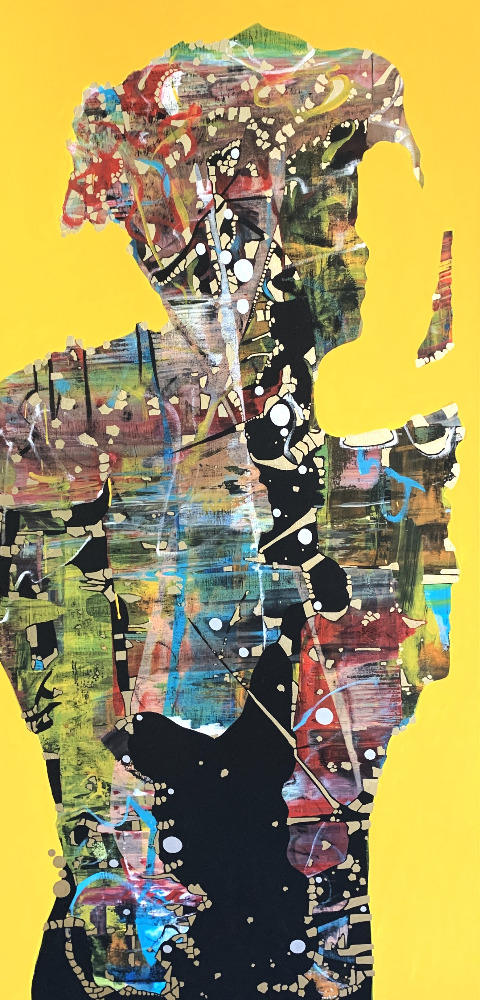
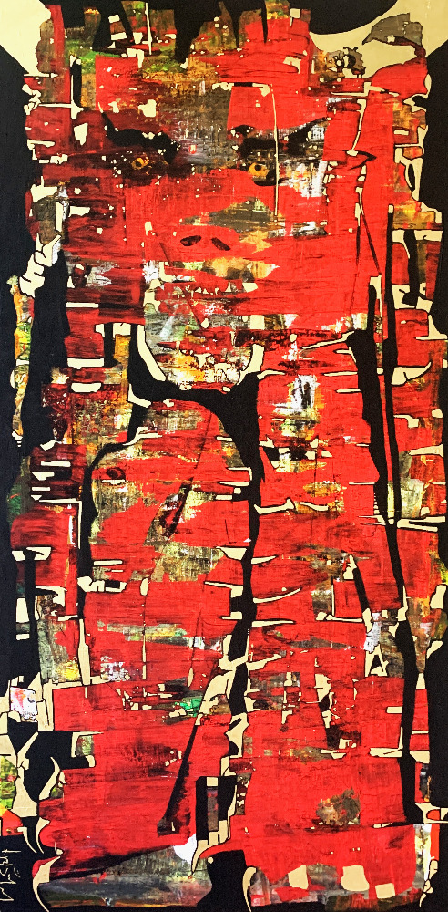
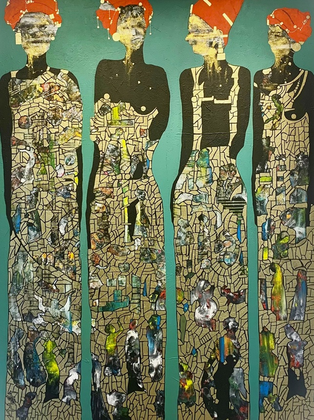
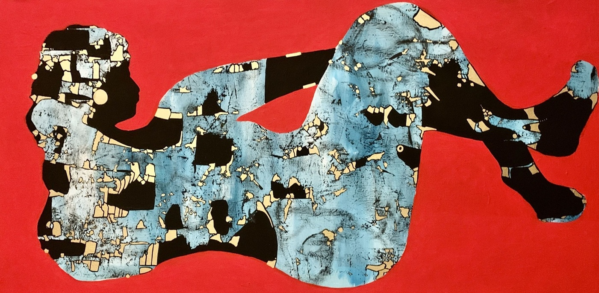
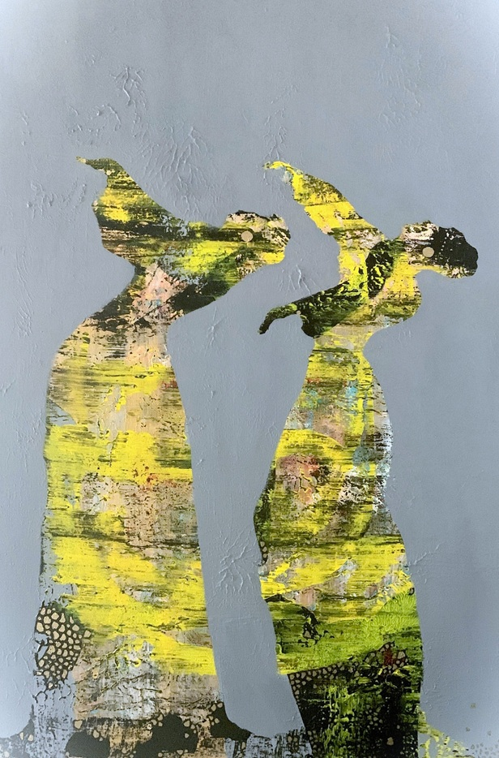
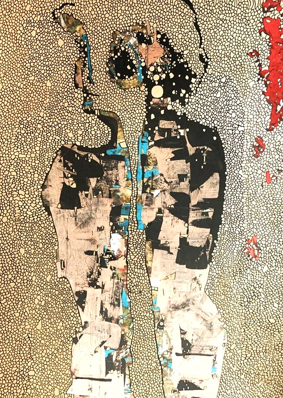
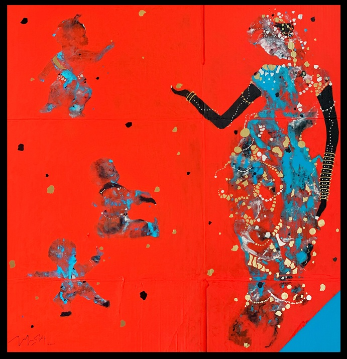
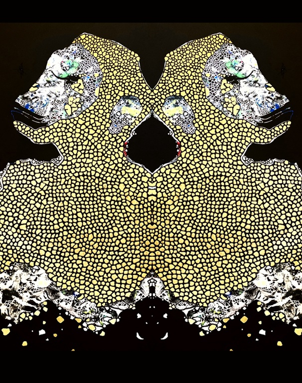
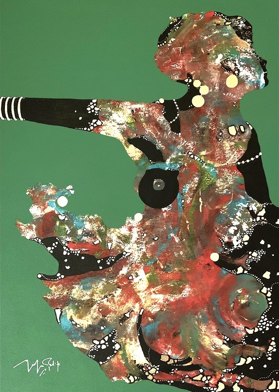

UMĚNÍ
Výtvarný projev, kterým je Hesham Malik a jeho umění charakteristické, je svěží, s propracovaným vztahem k formě, designu a barevnosti. Téma Heshamovy tvorby se vrací k jednoduchosti a obyčejnému životu lidí – jeho analýza a vyjádření této „každodennosti“ je však jedinečné.
Hesham se záměrně vystavuje domorodým kulturám a jejich prostředí a soustředí se na přímou interakci s lidmi z různých komunit. Mnoho z jeho filozofických a etnografických poznatků pochází ze zkušenosti s odlišnými kulturami. Překračování hranic kulturních oblastí je Malikovou vášní a celoživotní inspirací pro tvorbu. Zaměřuje se na kontrasty a drobné podobnosti našich životů jako smrtelných lidských bytostí.
Hesham je vypravěčem a kritikem zároveň. Vyzývá diváka k hluboké introspekci a k dialogu.
Umělecká tvorba
Vybraná muzejní díla

Path

Purusa

Polahme

Trance

Conviviality

Life of a Box

Brain
